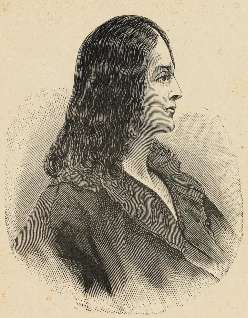
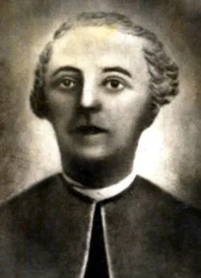
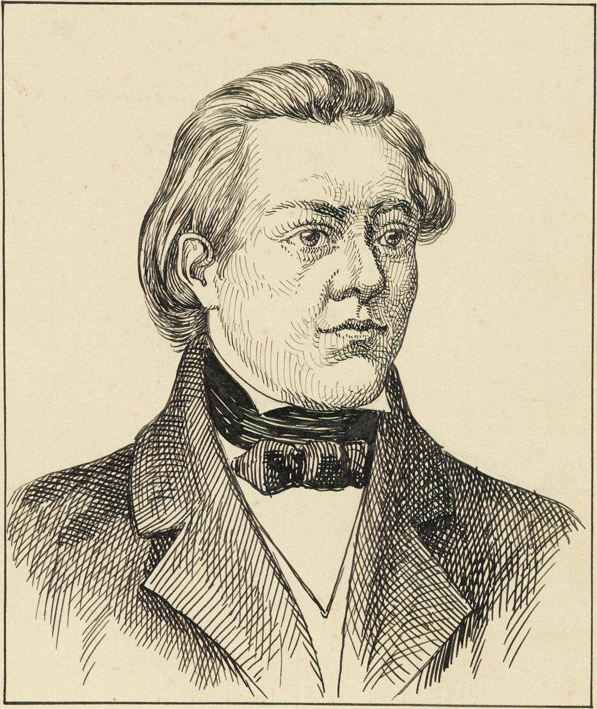

Introdução
O Arcadismo, que predominou no século XVIII, é conhecido por seus ideais de simplicidade e uma forte ligação com a natureza.
O Arcadismo, que surgiu no século XVIII, propôs uma volta à simplicidade e à natureza, como uma reação ao excesso do Barroco. Inspirado pelos ideais do Iluminismo e pela cultura clássica, o movimento buscou representar a vida pastoral e a harmonia com a natureza. Os poetas árcades usavam uma linguagem clara e estruturada, valorizando a musicalidade dos versos. Autores como Tomás Antônio Gonzaga e Cláudio Manuel da Costa abordaram temas como o amor idealizado e a vida simples no campo, promovendo a busca pela beleza e pela serenidade.
Principais Autores
- Tomás Antônio Gonzaga 
- Cláudio Manuel da Costa 
- Basílio da Gama 
Obras Significativas
- Obras Poéticas
- Marília de Dirceu
- Culto Métrico
- O Uraguai
- Cartas Chilenas
As obras do Arcadismo abordam temas como amor e natureza, com uma linguagem clara e acessível.